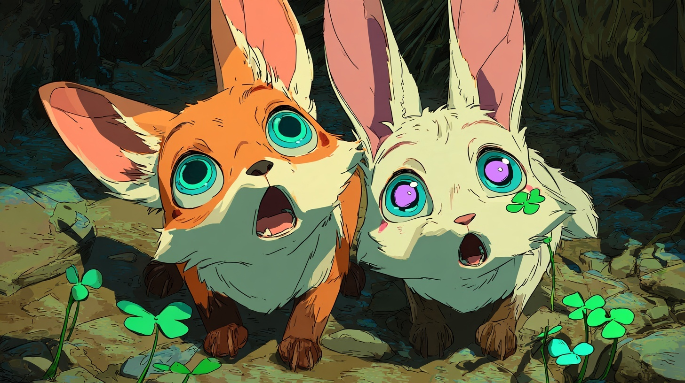
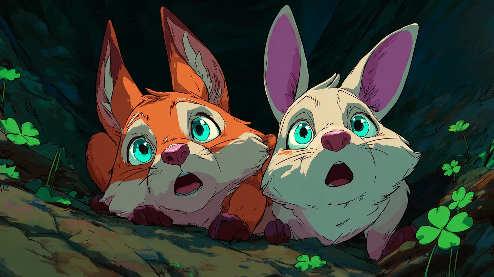
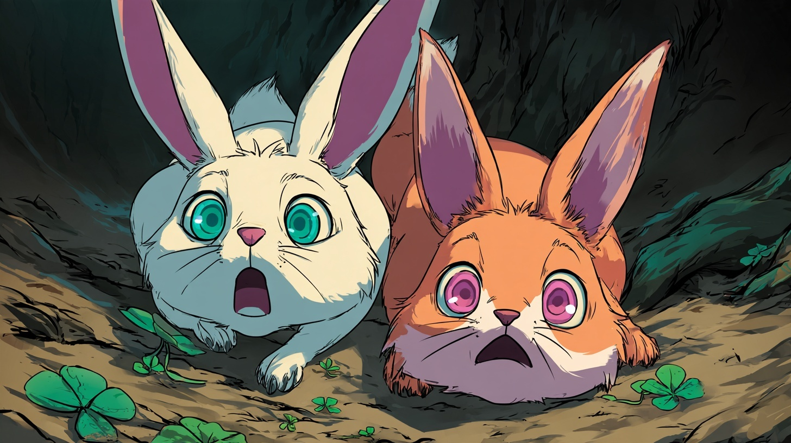
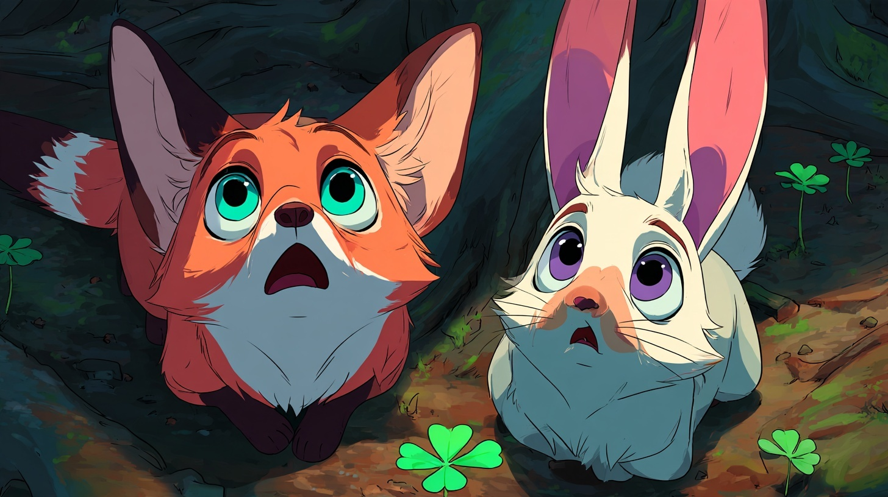
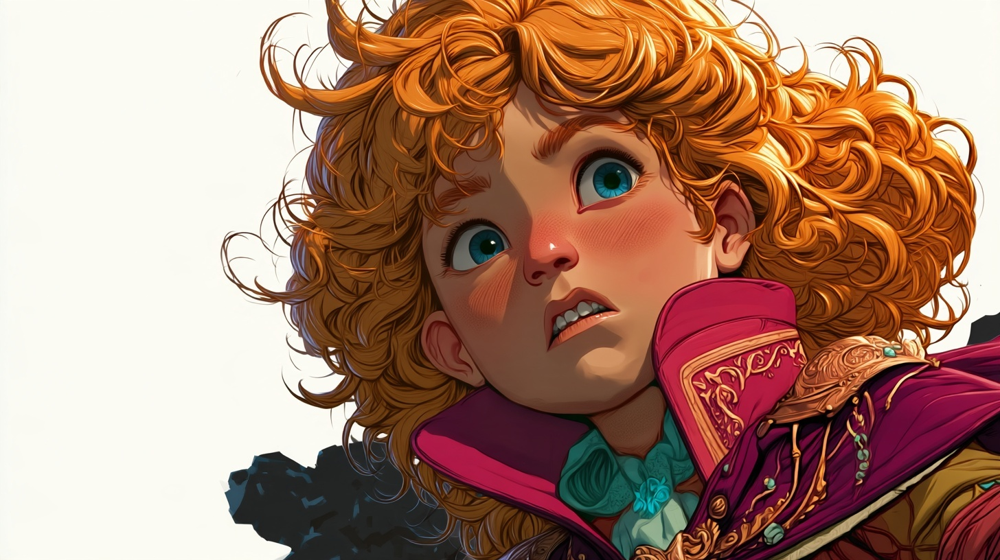
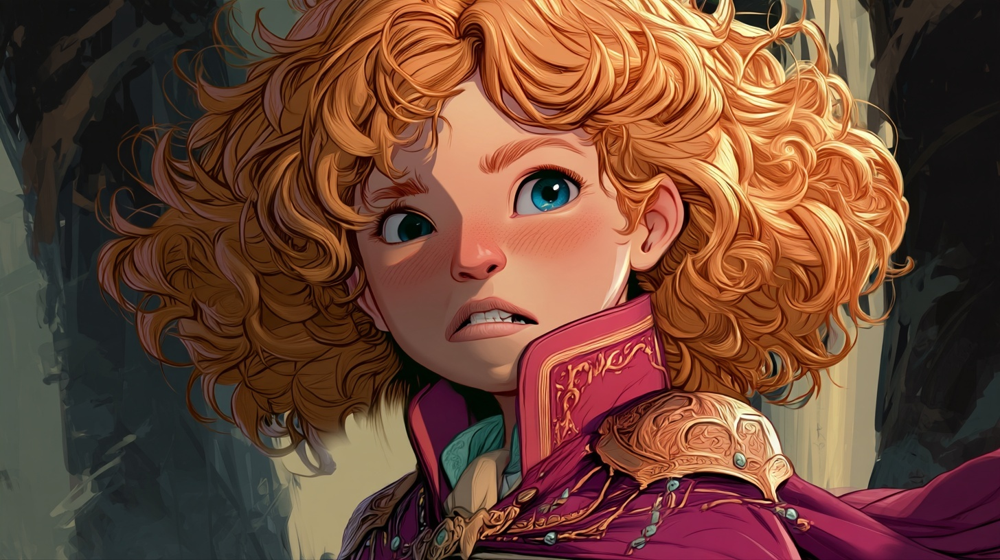
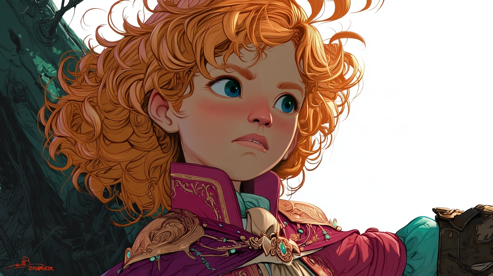
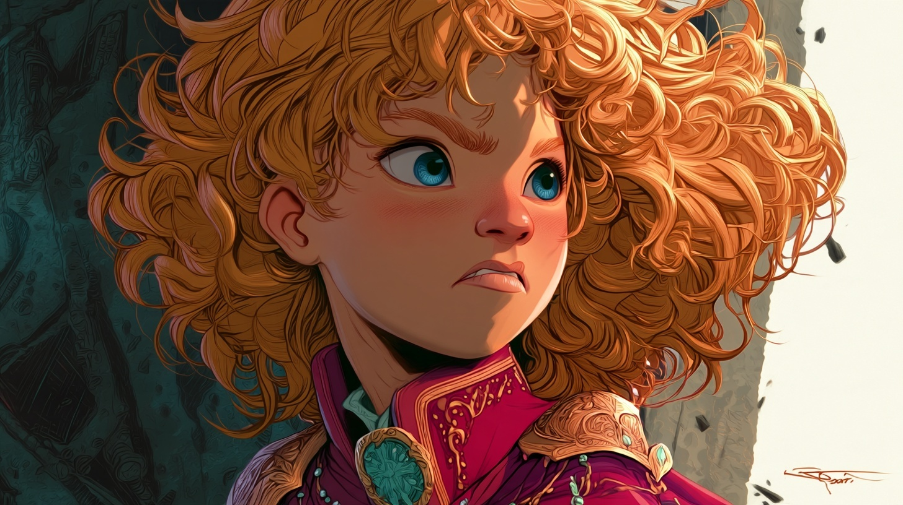
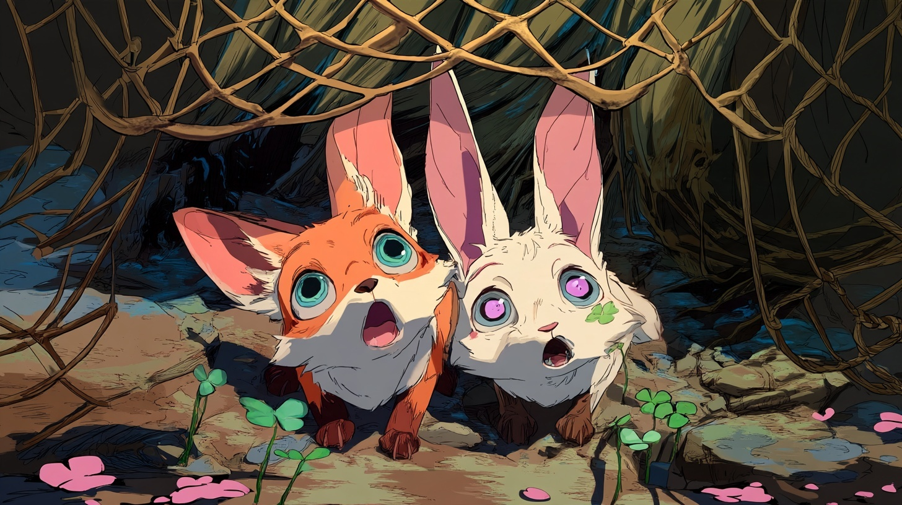

← Watch the working cutThe moment the fun stops.
New Midjourney reaction art, inspected against the existing cast. The first grid was rejected because every candidate still smiled. The corrected grid below makes the fear visible. These are working candidates; remaining identity differences are recorded.
Working cut selectionReaction 1

Both friends look upward with wide eyes and open worried mouths. Fox turquoise eyes and hare violet eyes retained; clover on hare face. Ears still upright, proportions younger and flatter than original portraits. Dark teal clearing supports conflict; amber light preserves visibility. Not final character approval.
Midjourney originalRejectReaction 2

Hare has turquoise eyes and lacks identifying clover. Expression clearer but character continuity fails.
Midjourney originalRejectReaction 3

Eye colors swapped; proportions and expression too comically exaggerated.
Midjourney originalAlternateReaction 4

Readable worried mouths and correct eye colors. Hare lacks clover ornament, ear color and muzzle markings drift.
Midjourney originalAbbie hears the call.
Abbie 1

Concern readable, but empty white background and upward angle complicate continuity.
Abbie 2

Strong concern and matching forest; faces viewer rather than the established departure direction.
Abbie 3

Correct rightward eyeline, but invented glove/arm and unfinished white background.
Abbie 4

Working-cut choice: tense brows, closed worried mouth, rightward eyeline, recognizable curls, turquoise eyes and magenta/gold coat. More polished rendering than friends; generated signature at edge and exact costume details require cleanup.
Captured.

Selected for cut: consistent with fear reaction, matching turquoise/violet eyes and clover. Net clearly frames pair; faces unobstructed. Mesh does not cross front of faces, and exact body/ear proportions still need polish.
The working cut pairs this close-up with Raze-only crops from two action plates. Their original malformed friends are excluded. Full originals and rejection notes remain saved with provenance.
Still to finish: exact character continuity, approved companion, soundtrack and real game handoff. This is a silent browser draft.
Earlier 16 proofs and reference portraits